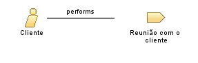

| Role: Cliente |
 |
|
Relationships
 |
||
| Primary Performs | ||
|---|---|---|
| Additionally Performs | ||
| Modifies |
|
|
Main Description
| O papel do cliente no processo de sistemas de gestão web é de acompanhar as etapas do desenvolvimento do sistema de gerenciamento, sempre que possível dando feedbacks para a equipe sobre o quão relevante o sistema está ficando para o negócio a ser gerenciado. |